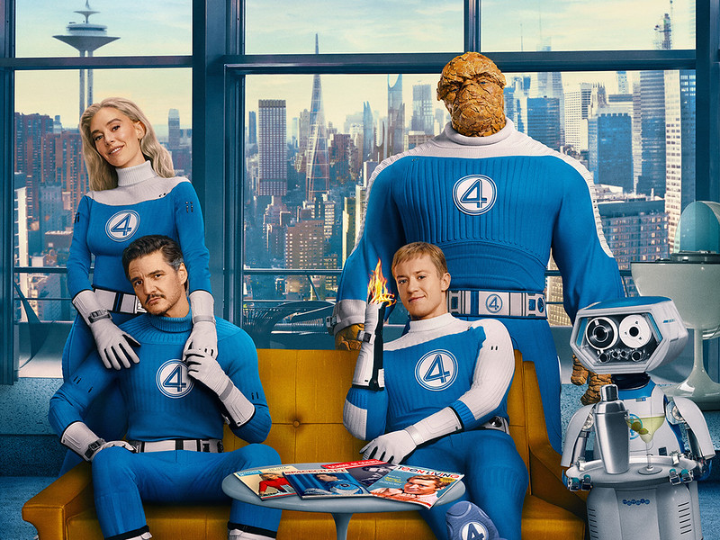

Quarteto Fantástico: Primeiros Passos (2025)

Sinopse
“Quarteto Fantástico: Primeiros Passos” apresenta uma nova versão da icônica equipe da Marvel. Após uma experiência científica que deu errado, quatro amigos ganham superpoderes e devem aprender a controlar suas habilidades para salvar o mundo de uma ameaça iminente.
Elenco Principal
- Pedro Pascal como Reed Richards / Senhor Fantástico
- Vanessa Kirby como Susan Storm / Mulher Invisível
- Joseph Quinn como Johnny Storm / Tocha Humana
- Ebon Moss-Bachrach como Ben Grimm / Coisa
Informações Técnicas
- Diretor: Matt Shakman
- Gênero: Ação, Aventura, Ficção Científica
- Duração: 115 minutos
- Data de lançamento:24 de agosto de 2025
- Classificação Indicativa: 12 anos
Curiosidades
- O filme é um reboot que traz uma nova abordagem para a famosa equipe da Marvel.
- As cenas de ação foram produzidas com tecnologia de ponta em efeitos visuais.
- A química entre o elenco foi muito elogiada pela crítica especializada.
- Possui diversas referências aos quadrinhos clássicos do Quarteto Fantástico.
Recepção da Crítica
“Quarteto Fantástico: Primeiros Passos” foi recebido com entusiasmo pela crítica e pelo público. No Rotten Tomatoes, o filme alcançou 86% de aprovação com base em mais de 350 críticas, enquanto no Metacritic recebeu uma nota média de 65/100, indicando avaliações geralmente favoráveis.
O site AdoroCinema destacou: “Um reboot refrescante que acerta na proposta de resgatar o espírito de equipe e família que sempre definiu o Quarteto.” A química entre os personagens foi apontada como um dos grandes trunfos do filme.
Estética e Direção
Com uma estética retrô-futurista inspirada nos anos 60, o longa chama atenção pelo design de produção refinado, figurinos nostálgicos e trilha sonora envolvente. A direção de Matt Shakman equilibra ação, humor leve e drama familiar com eficiência, respeitando a essência dos quadrinhos.
Impacto no Universo Marvel
Este filme marca o início da Fase Seis do MCU e representa uma nova introdução do Quarteto Fantástico, agora inserido oficialmente no universo cinematográfico compartilhado. Diferente de versões anteriores, esta adaptação aposta na leveza e na construção emocional dos personagens, preparando terreno para crossovers com os Vingadores e outros núcleos do MCU.